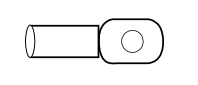

A010B ALTERNATOR (RECHARGING)
- Path
- Electrical equipment > 3 CONNECTORS > A STARTING - RECHARGING > A010 ALTERNATOR > A010B ALTERNATOR (RECHARGING)
- Kind
- connector pinout (pin -> wire colour -> other end)
- Applies to
- all engines; all production periods
- Interactive page
- https://sloeber94.github.io/elrnDB-fPnd/en/#/169002505
Applies to: all engines; all production periods

Wiring | Colour |
|---|---|
- |
Pin | Cable | Destination | |||
|---|---|---|---|---|---|
Sec.. | Colour | Node | Connect. | Pin | |
- | 10 | R (red) | - | ||